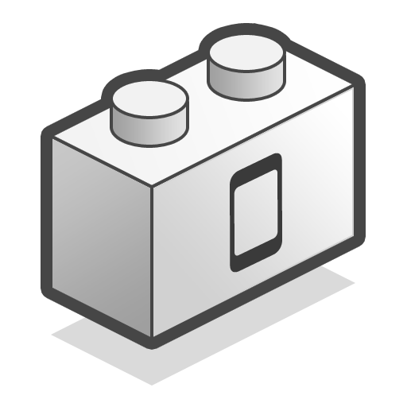

Apache Cordova
Subject Matter Champion, YEA!
Who Am I ?
- Luke Holmquist
- JBoss by Red Hat(Sr. Software Engineer)
- Aerogear
- Blog: lholmquist.org
- Twitter: @Sienaluke
Background

Cordova: What is it?
Corodova: How does it work
iOS
> 4.2
//Javascript
execXhr = execXhr || new XMLHttpRequest();
execXhr.open('HEAD', "/!gap_exec?" + (+new Date()), true);
......//headers are set
execXhr.send(null);
iOS
> 4.2
//CDVURLProtocol.m
if ([[theUrl path] isEqualToString:@"/!gap_exec"]) {
....
NSString* queuedCommandsJSON =
[theRequest valueForHTTPHeaderField:@"cmds"];
[viewController performSelectorOnMainThread:@selector(executeCommandsFromJson:)
withObject:queuedCommandsJSON
waitUntilDone:NO];
}
//Where the magic Happens
- (NSString *)stringByEvaluatingJavaScriptFromString:(NSString *)script
iOS
<= 4.2
//Javascript
execIframe = execIframe || createExecIframe();
execIframe.src = "gap://ready";
iOS
<= 4.2
//Objective-C
(BOOL) webView:(UIWebView*)theWebView
shouldStartLoadWithRequest:(NSURLRequest*)request
navigationType:(UIWebViewNavigationType)navigationType {
if ([[url scheme] isEqualToString:@"gap"]) {
[self flushCommandQueue];
return NO;
}
}
- (NSString *)stringByEvaluatingJavaScriptFromString:(NSString *)script
Android
- Javascript OFF by default
- Need to bind
addJavascriptInterface(exposedJsApi, "_cordovaNative");
Android
- >=4.2
- Annotations
@JavascriptInterface
public String exec( ... ) { ... }
Android
- <4.2
- Use a confirm dialog
Create a New Project
- Cordova Commands
- Cordova CLI
$ cordova create Cool
$ cd Cool
$ cordova platform add ios
$ cordova build
$ cordova emulate
Cordova CLI
- Hooks
- Project and Module Specific
Plugins
Javascript
- Common API
cordova.exec(function(winParam) {},
function(error) {},
"service",
"action",
["firstArgument", "secondArgument", 42, false]
);
Success Callback
cordova.exec(function(winParam) {}, .... );
Assuming your exec call completes successfully, this function will be invoked (optionally with any parameters you pass back to it)
Error Callback
cordova.exec( ..
function(error) {},
...);
If the operation does not complete successfully, this function will be invoked (optionally with an error parameter)
Service
cordova.exec(...
"service", ...);
The service name to call into on the native side. This will be mapped to a native class.
Action
cordova.exec(...
"action", ...);
The action name to call into. This is picked up by the native class receiving the exec call, and, depending on the platform, essentially maps to a class's method.
Arguments
cordova.exec(...
["firstArgument", "secondArgument", 42, false]
);
Arguments to get passed into the native environment
Native
- Code Depends on Platform, DUH
- Override the Cordova Plugin Class
- "Authorize" it in a settings file
Where to Get Plugins
- No Easy Way... Yet
- Moving Toward CLI Plugin Discovery
- Proposed Cordova Plugin Spec
AeroGear Plugins
- Use Cases?
- Core Data?
- Aerogear OTP?
How Can We Contribute?
We Are commiters
How Can We Contribute
- Look At JIRA's
- Docs
- Integrate With Tooling?
- Help Convert Existing Plugins to plugmanable
- move forward plugin repo
Cordova haz Roadmaps
- Core API Audit in progress
- Core API Audit link
- Roadmap
- RoadMap link